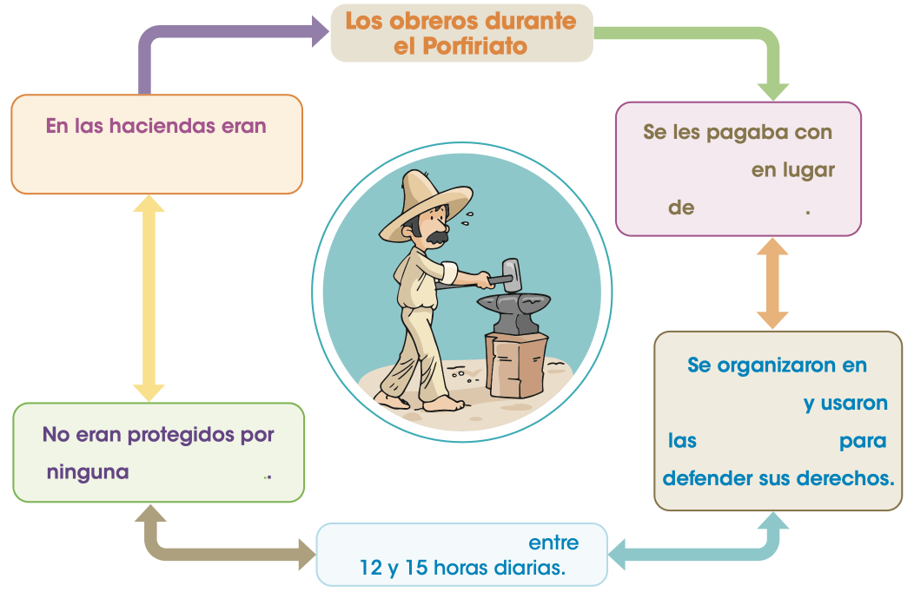

Estudio los movimientos obreros
La sociedad porfiriana y los movimientos de protesta: campesinos y obreros
Completa el esquema escribiendo las palabras que faltan. Consulta la página 94 de tu libro de texto SEP.
